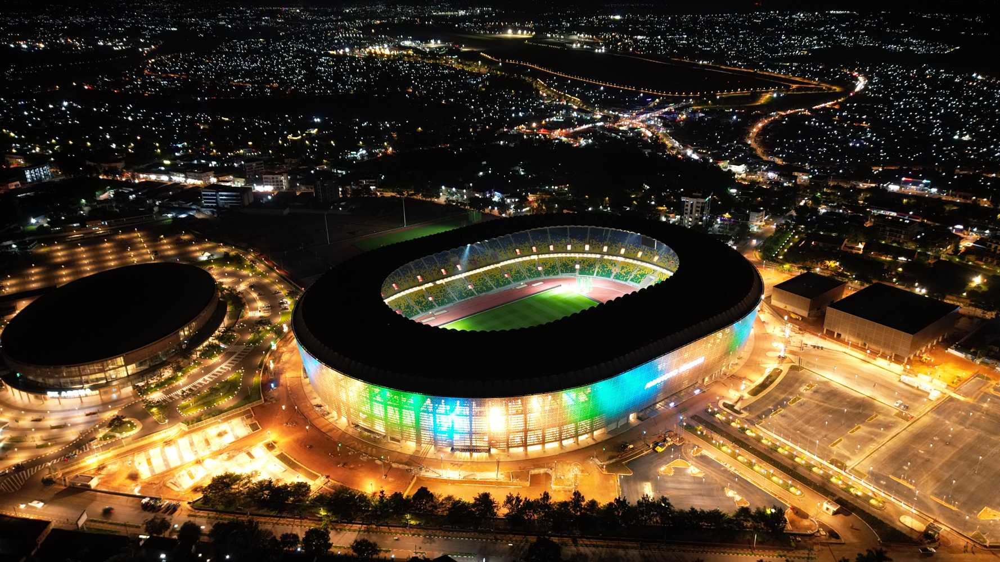
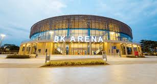

Amahoro Stadium
The Amahoro Stadium is a multi-purpose stadium in Kigali, Rwanda. It is currently used mostly for football matches and is the home ground of APR FC. The stadium has a capacity of 20,000 people.

The Amahoro Stadium is a multi-purpose stadium in Kigali, Rwanda. It is currently used mostly for football matches and is the home ground of APR FC. The stadium has a capacity of 20,000 people.

The BK Arena is a multi-purpose stadium in Kigali, Rwanda. It is currently used mostly for basketball matches and is the home ground of BK Jette. The stadium has a capacity of 10,000 people.

The Nyandungu Eco Park is a nature reserve in Kigali, Rwanda. It is a popular destination for tourists and locals alike. The park has a variety of animals and plants and is a great place to relax and enjoy the nature.